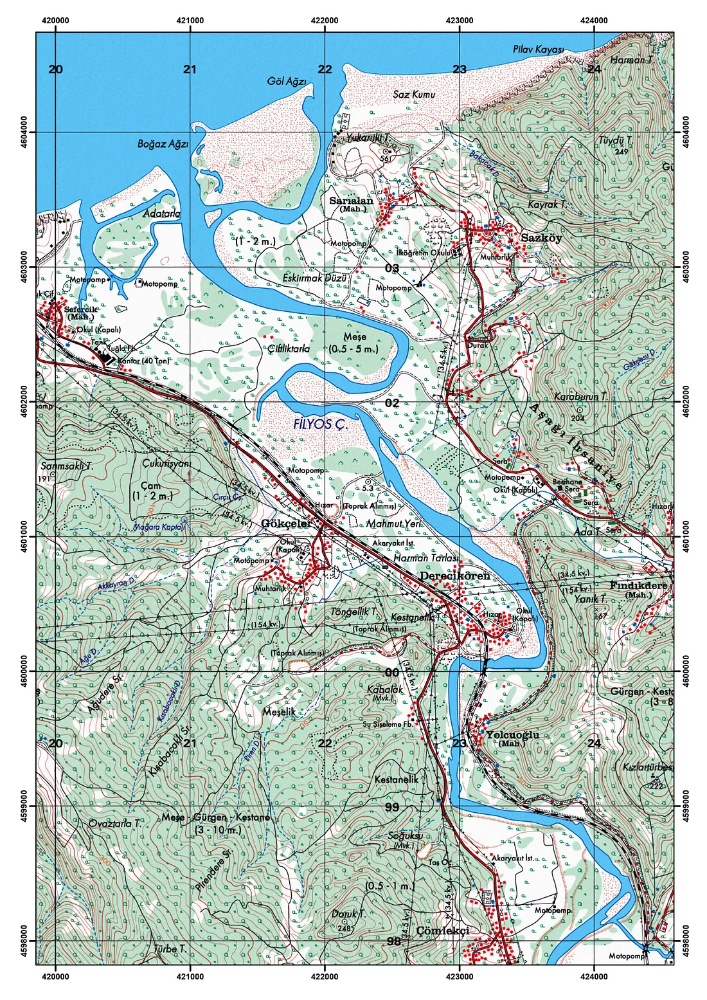
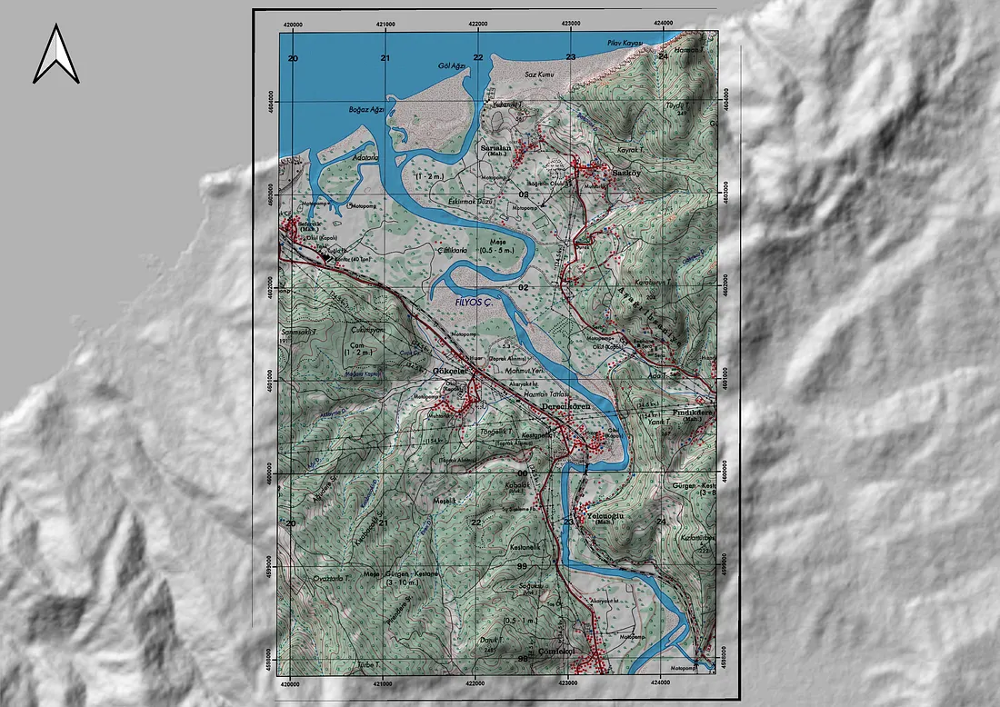
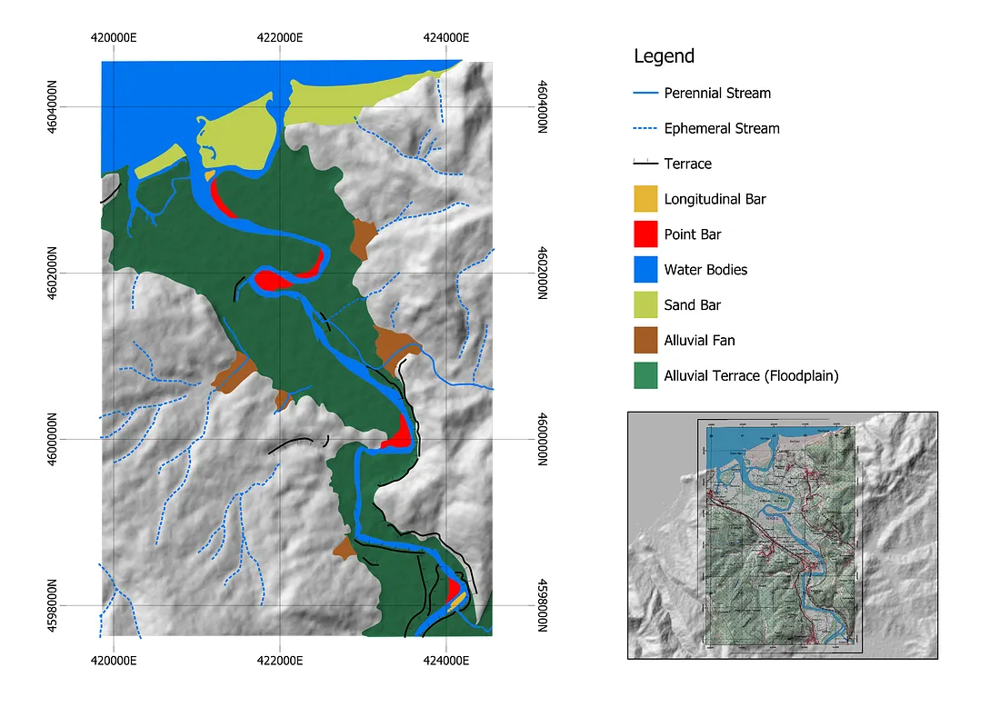
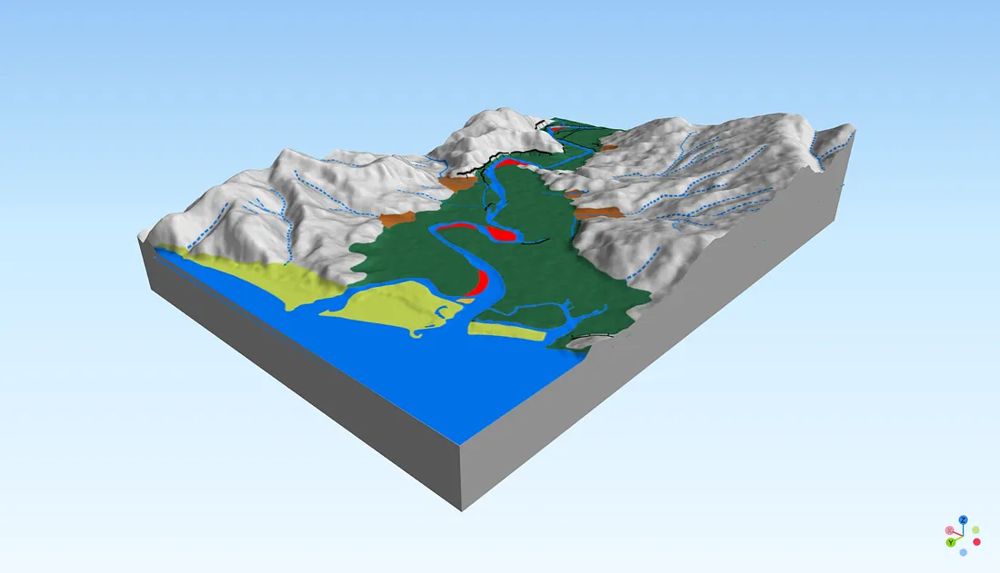
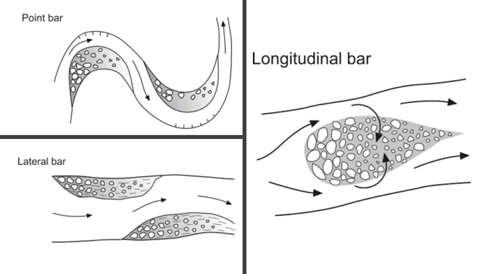
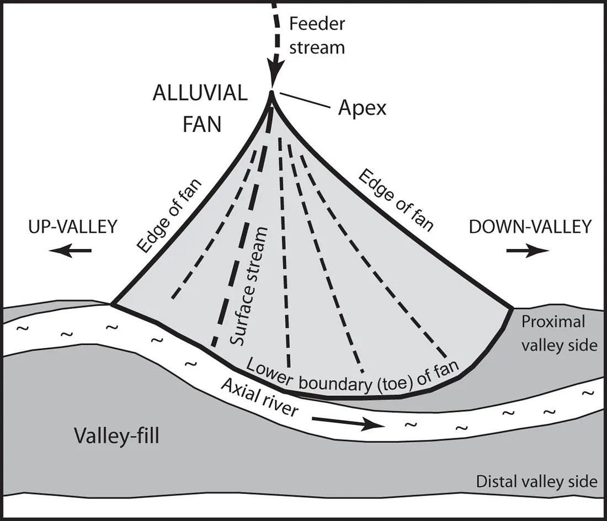
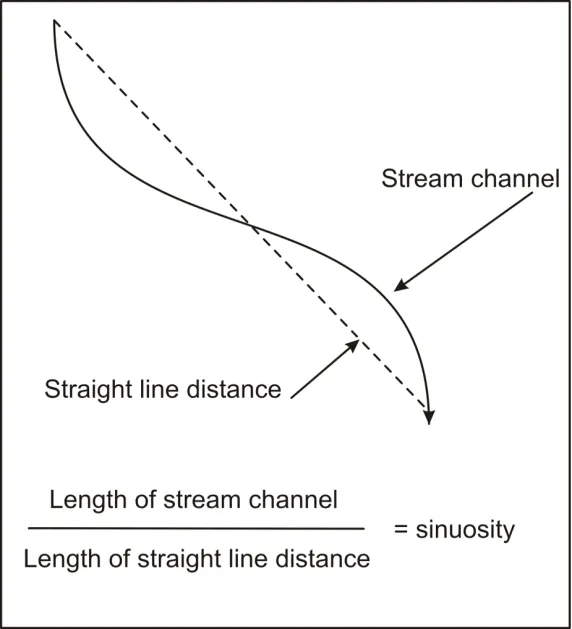
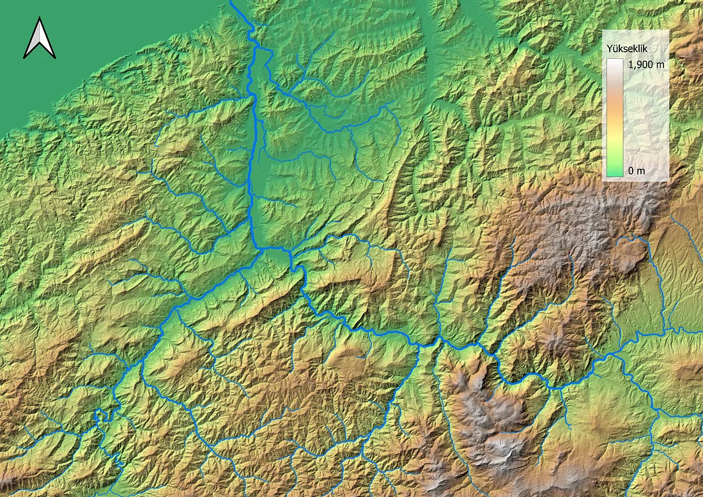
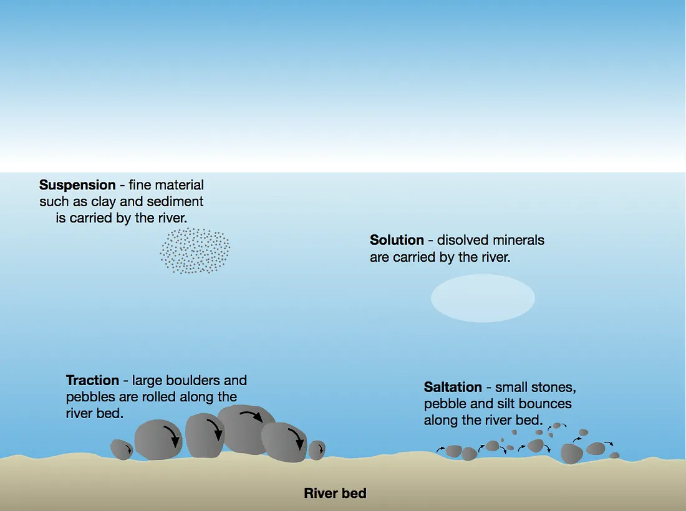

Mapping Fluvial Features of Filyos River
The analysis of fluvial scenery
Reading the River from a Map

Above is a topographic map of the Filyos River in northern Türkiye, flowing from the North Anatolian mountains in the south to the Black Sea in the north. Through this topographic map, we can clearly see the fluvial features, such as the meandering channel, floodplain, and the sediment deposits scattered along the riverbank at several points.
GIS is an excellent tool for identifying and analysing these features. It helps us understand how these features are formed and why they exist, allowing us to comprehend the interactions between various processes in more detail.
GIS as a Mapping Tool
GIS stands for Geographic Information System. GIS helps us to analyse and manipulate spatial data based on our project and preferences. Geographers need GIS, as do any other geoscientists or even geo-geeks, as it provides perfect tools for understanding physical phenomena on Earth. We can even do modelling with GIS, such as sediment flow modelling, hydrological modelling, and geological modelling. Some software, like SAGA, provides many modules for terrain analysis and modelling, and it is easy to use. We only need two things: knowledge of geography or geoscience and data (raster, vector, or both) to run these sophisticated tools in SAGA. We can use the famous ArcGIS Pro or the free QGIS. The differences between these GIS software lie only in their GUI, but the tools are essentially the same. You don't have to be in geography or geoscience to understand the geoprocessing tools. You can read a bunch of articles related to it, and voilà! You can operate it just like professionals do!
Oops, sorry for the excitement about GIS. Let's continue to the topic I brought here.
Data and Software
To identify and map the fluvial features on a topographic map, we need, of course, a physical topographic map. A scanned version is better, especially in .jpg or .png format, because we can input that map directly into GIS software. In this study, QGIS is used for geomorphological and hydrological analysis and SAGA for visualising and terrain modelling. Why use QGIS? Because QGIS is free, open-source, powerful, and 'tailored' with love for anyone who uses it. SAGA is also free, suitable for geoscientific analysis, and very geography-focused. Why is SAGA "geographiable"? Because it was created by a small team of researchers from the Department of Physical Geography at the University of Göttingen. If you're into geography, specifically physical geography, you'll smile when you explore the SAGA modules.
The topographic map above is georeferenced. The coordinate system for the map is UTM Zone 36N with WGS 1984 as the datum. It fits precisely to the DEM because this map is quite easy to georeference; the coordinate points are noticeable, and we can input them into the georeferencing system easily.

The topographic map is rendered with a multiply blend mode so that we can see how precisely it fits the elevation data beneath it. With this type of visualisation, we can identify various features that are distinctly fluvial. The floodplain, valley slope, sandbar, point bar, lateral bar, sand deposits, and the meandering river itself are some of the many features we can clearly identify without deeper analysis.
Identifying the Fluvial Landscape
With deeper analysis of the topographic map, and with the help of the DEM, we can identify many more features that cover this scenery. Below are the fluvial features that cover the study area, which is the downstream part of the Filyos River.


Based on the map above, there are nine features, mostly fluvial, that cover this scenery. Bars, alluvial fans, and floodplains are very fluvial. These features are created by the flow of water, with erosion and deposition occurring partly in the landform. Bars and alluvial fans are depositional features. Flowing water that moves boulders, gravel, and other sediment deposits has less energy to transport that sediment due to the slope conditions being less steep or even flat. These topographic conditions are mostly found in the downstream part of the river, where deposition occurs more frequently than erosion. Erosion generally occurs in the upstream part of the river, where the topography is steep. This kind of topographical condition supports water moving faster downstream, increasing the discharge rate of the water, and enabling it to erode valley slopes more effectively. The eroded material then moves along the river to the downstream part and is deposited there because the water has less energy due to the flat conditions of the downstream area. This material is then deposited along the river (side bar), inside meander bends (point bar), and in the centre of the channel, elongated in the direction of the flow (longitudinal bar).
Depositional Landforms: Bars and Alluvial Fans
On the other hand, alluvial fans, based on the study area above, are created by moving water along the valley slope and are mostly formed by ephemeral streams — streams that have water only during precipitation events. From the topographic conditions in the study area, it is probable that most of the alluvial fans along the valley slopes are there due to the limited water provided by the streams to move the sediment downslope, because of the ephemeral nature of the streams. Thus, instead of moving the sediment deposits down to the river,the streams can only depositthe sediment downthe valley due tothe lack of water energy to carrythe sediment further.


Is the River Really Meandering?
Now, let's move on to the most unique part of the river: river meandering. But before we delve into it, we need to question ourselves carefully: is the river really meandering? Because when we observe fluvial landforms, our eyes tell us "yes, the river is meandering," but based on mathematical calculations, we could potentially be wrong. To understand more about river meanders, geometrical analysis of the meander is useful in providing insights into the meander geometry. Let's look at the diagram and the equation below.

Channel length and valley length need to be calculated to determine the sinuosity ratio. The sinuosity ratio gives an indication of how 'bendy' a channel is and can be worked out by measuring the length of a channel reach and dividing this by the straight-line distance along the valley (Charlton, 2007). Below is the index used to identify the sinuosity of the river.
Using GIS, we can calculate the channel length and valley length, as shown in the diagram below.
The valley length of our study area is 7 km, and the channel length is 11 km. Using the equation in Figure 8, the sinuosity ratio of the Filyos River, covering our study area, is calculated to be 1.57. Now, we're confident that this river truly meanders based on our calculated value. However, the issue with this equation and ratio is that they do not account for physical differences; the descriptions in Figure 9 are somewhat arbitrary, despite their widespread use.
Why the Filyos River Meanders
Let's delve into analysing why the Filyos River meanders. Why meandering and not anabranching or braiding? The answer lies in the upstream conditions of the Filyos River basin.

The topographic conditions in the upstream part of the Filyos River basin are mountainous and quite hilly. Under these circumstances, the water discharge is very high and has enough power to erode the valley slopes along the river course, moving the eroded particles downstream in the form of suspended load. This type of load is responsible for the formation of meanders in rivers, contrasting with bed load, which forms braided rivers. The diagrams below illustrate different types of sediment transport in rivers.

Floodplain Character and Confinement
Besides the type of load, geological factors also play an important role in the meandering of rivers. Noticeably, the floodplain in our study area is not very wide due to boundary conditions, placing the Filyos River channel in a partly confined setting. While the river can develop a floodplain and migrate laterally to some degree, the valley slope or hillslope along the river channel prevents further migration. This is influenced by geological and lithological factors; the more resistant the rock structure, the harder it is for the river to erode.
The floodplain formed along the Filyos channel contains deposits ranging from gravel to fine sands, categorising it as a medium-energy, non-cohesive floodplain. The specific stream power in this environment ranges from 10 to 300 W·m⁻². Point bar and lateral bar accretion are the primary processes involved in floodplain construction (see Figure 6).
Sources
[1] Akbar, I., & Setiawan, B. (2019). Morphometric analysis for evaluation of environmental change and disaster reduction of flood.
[2] Charlton, R. (2007). Fundamentals of fluvial geomorphology. Routledge.
[3] Giles, P. T., Whitehouse, B. M., & Karymbalis, E. (2018). Interactions between alluvial fans and axial rivers in Yukon, Canada and Alaska, USA. Geological Society, London, Special Publications, 440(1), 23–43.
Software & Plugin[1] Conrad, O., Bechtel, B., Bock, M., Dietrich, H., Fischer, E., Gerlitz, L., Wehberg, J., Wichmann, V., & Böhner, J. (2015). System for Automated Geoscientific Analyses (SAGA) v. 2.1.4. Geoscientific Model Development, 8, 1991–2007. https://doi.org/10.5194/gmd-8-1991-2015
[2] QGIS.org (2024). QGIS Geographic Information System. Open Source Geospatial Foundation Project. http://qgis.org
Dataset[1] ALOS PALSAR DEM
[2] Copernicus Global DSM
[3] Türkiye's General Directorate of Mapping